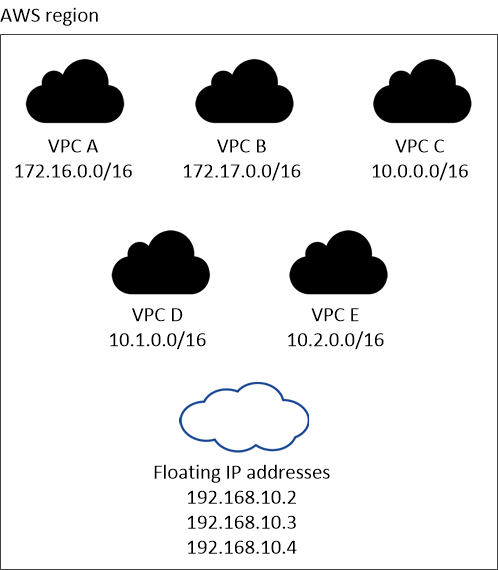
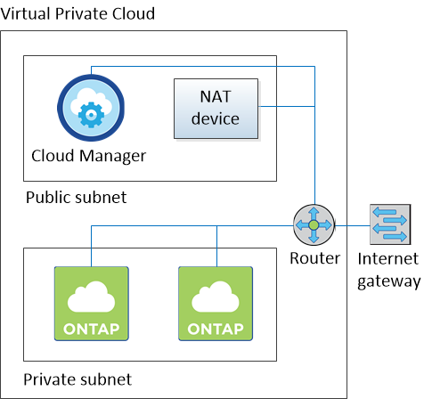
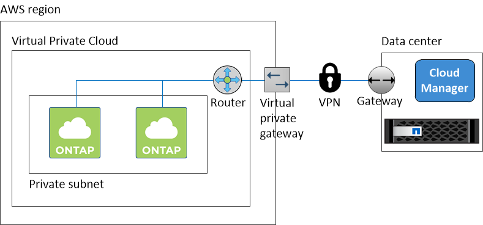

Go to the docs for the latest release.
Networking requirements for Cloud Volumes ONTAP in AWS
Contributors
 Download PDF of this page
Download PDF of this page
You must set up your AWS networking so Cloud Volumes ONTAP systems can operate properly.
General AWS networking requirements for Cloud Volumes ONTAP
The following requirements must be met in AWS.
- Outbound internet access for Cloud Volumes ONTAP nodes
-
Cloud Volumes ONTAP nodes require outbound internet access to send messages to NetApp AutoSupport, which proactively monitors the health of your storage.
Routing and firewall policies must allow AWS HTTP/HTTPS traffic to mysupport.netapp.com.
If you have a NAT instance, you must define an inbound security group rule that allows HTTPS traffic from the private subnet to the internet.
- Outbound internet access for the HA mediator
-
The HA mediator instance must have an outbound connection to the AWS EC2 service so it can assist with storage failover. To provide the connection, you can add a public IP address, specify a proxy server, or use a manual option.
The manual option can be a NAT gateway or an interface VPC endpoint from the target subnet to the AWS EC2 service. For details about VPC endpoints, refer to AWS Documentation: Interface VPC Endpoints (AWS PrivateLink).
- Security groups
-
You do not need to create security groups because Cloud Manager does that for you. If you need to use your own, refer to Security group rules.
- Connection from Cloud Volumes ONTAP to AWS S3 for data tiering
-
If you want to use EBS as a performance tier and AWS S3 as a capacity tier, you must ensure that Cloud Volumes ONTAP has a connection to S3. The best way to provide that connection is by creating a VPC Endpoint to the S3 service. For instructions, see AWS Documentation: Creating a Gateway Endpoint.
When you create the VPC Endpoint, be sure to select the region, VPC, and route table that corresponds to the Cloud Volumes ONTAP instance. You must also modify the security group to add an outbound HTTPS rule that enables traffic to the S3 endpoint. Otherwise, Cloud Volumes ONTAP cannot connect to the S3 service.
If you experience any issues, see AWS Support Knowledge Center: Why can’t I connect to an S3 bucket using a gateway VPC endpoint?.
- Connections to ONTAP systems in other networks
-
To replicate data between a Cloud Volumes ONTAP system in AWS and ONTAP systems in other networks, you must have a VPN connection between the AWS VPC and the other network—for example, an Azure VNet or your corporate network. For instructions, see AWS Documentation: Setting Up an AWS VPN Connection.
- DNS and Active Directory for CIFS
-
If you want to provision CIFS storage, you must set up DNS and Active Directory in AWS or extend your on-premises setup to AWS.
The DNS server must provide name resolution services for the Active Directory environment. You can configure DHCP option sets to use the default EC2 DNS server, which must not be the DNS server used by the Active Directory environment.
For instructions, refer to AWS Documentation: Active Directory Domain Services on the AWS Cloud Quick Start Reference Deployment.
AWS networking requirements for Cloud Volumes ONTAP HA in multiple AZs
Additional AWS networking requirements apply to Cloud Volumes ONTAP HA configurations that use multiple Availability Zones (AZs). You should review these requirements before you launch an HA pair because you must enter the networking details in Cloud Manager.
To understand how HA pairs work, see High-availability pairs.
- Availability Zones
-
This HA deployment model uses multiple AZs to ensure high availability of your data. You should use a dedicated AZ for each Cloud Volumes ONTAP instance and the mediator instance, which provides a communication channel between the HA pair.
- Floating IP addresses for NAS data access
-
Cloud Volumes ONTAP HA configurations in multiple AZs use floating IP addresses for NAS client access from within the VPC. These IP addresses can migrate between nodes when failures occur.
You must specify three floating IP addresses that are outside of the CIDR blocks for all VPCs in the AWS region in which you deploy the HA configuration. You can think of the floating IP addresses as a logical subnet that is outside of the VPCs in your region.
One floating IP address is for cluster management, one is for NFS/CIFS data on node 1, and one is for NFS/CIFS data on node 2. The following example shows the relationship between floating IP addresses and the VPCs in an AWS region. While the floating IP addresses are outside the CIDR blocks for all VPCs, they are routable to subnets through route tables.

You must manually enter the floating IP addresses in Cloud Manager when you create a Cloud Volumes ONTAP HA working environment. Cloud Manager allocates the IP addresses to the HA pair when it launches the system.
Cloud Manager automatically creates static IP addresses for iSCSI access and for NAS access from clients outside the VPC. You do not need to meet any requirements for these types of IP addresses. - Floating IP address for SVM management
-
If you use SnapDrive for Windows or SnapCenter with an HA pair, a floating IP address is also required for the SVM management LIF. Cloud Manager prompts you to specify the IP address when you launch the HA pair. If you did not specify the IP address, you can create the SVM Management LIF later. For details, see Setting up Cloud Volumes ONTAP.
- Route tables
-
After you specify the floating IP addresses in Cloud Manager, you must select the route tables that should include routes to the floating IP addresses. This enables client access to the HA pair.
If you have just one route table for the subnets in your VPC (the main route table), then Cloud Manager automatically adds the floating IP addresses to that route table. If you have more than one route table, it is very important to select the correct route tables when launching the HA pair. Otherwise, some clients might not have access to Cloud Volumes ONTAP.
For example, you might have two subnets that are associated with different route tables. If you select route table A, but not route table B, then clients in the subnet associated with route table A can access the HA pair, but clients in the subnet associated with route table B cannot access the HA pair.
For more information about route tables, refer to AWS Documentation: Route Tables.
- Connection to NetApp management tools
-
When deployed in multiple AZs, Cloud Volumes ONTAP HA configurations use a floating IP address for the cluster management interface, which means external routing is not available. If you want to use NetApp management tools with HA configurations, they must be in the same VPC with similar routing configuration as NAS clients.
Example configuration
The following image shows an optimal HA configuration in AWS operating as an active-passive configuration:

Sample VPC configurations
To better understand how you can deploy Cloud Manager and Cloud Volumes ONTAP in AWS, you should review the most common VPC configurations.
-
A VPC with public and private subnets and a NAT device
-
A VPC with a private subnet and a VPN connection to your network
A VPC with public and private subnets and a NAT device
This VPC configuration includes public and private subnets, an internet gateway that connects the VPC to the internet, and a NAT gateway or NAT instance in the public subnet that enables outbound internet traffic from the private subnet. In this configuration, you can run Cloud Manager in a public subnet or private subnet, but the public subnet is recommended because it allows access from hosts outside the VPC. You can then launch Cloud Volumes ONTAP instances in the private subnet.
| Instead of a NAT device, you can use an HTTP proxy to provide internet connectivity. |
For more details about this scenario, refer to AWS Documentation: Scenario 2: VPC with Public and Private Subnets (NAT).
The following graphic shows Cloud Manager running in a public subnet and single node systems running in a private subnet:

A VPC with a private subnet and a VPN connection to your network
This VPC configuration is a hybrid cloud configuration in which Cloud Volumes ONTAP becomes an extension of your private environment. The configuration includes a private subnet and a virtual private gateway with a VPN connection to your network. Routing across the VPN tunnel allows EC2 instances to access the internet through your network and firewalls. You can run Cloud Manager in the private subnet or in your data center. You would then launch Cloud Volumes ONTAP in the private subnet.
| You can also use a proxy server in this configuration to allow internet access. The proxy server can be in your data center or in AWS. |
If you want to replicate data between FAS systems in your data center and Cloud Volumes ONTAP systems in AWS, you should use a VPN connection so that the link is secure.
For more details about this scenario, refer to AWS Documentation: Scenario 4: VPC with a Private Subnet Only and AWS Managed VPN Access.
The following graphic shows Cloud Manager running in your data center and single node systems running in a private subnet:

 Edit on GitHub
Edit on GitHub